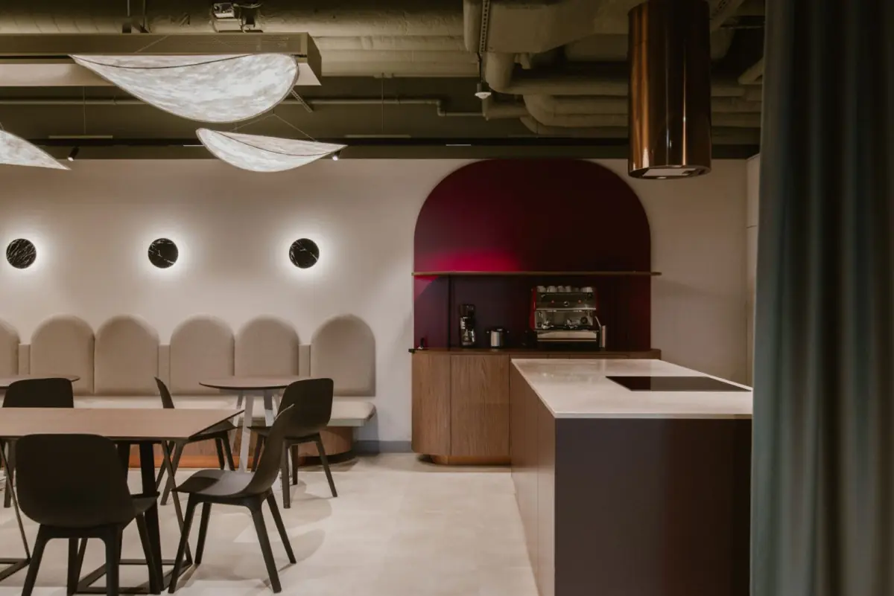

Wnętrza prywatne
Nowoczesny dom otwarty na naturę
Rezydencja w sosnowym lesie pod Warszawą: architektki zaprojektowały od podstaw bryłę i pełną aranżację wnętrz, a przeszklenia od podłogi do sufitu wpuszczają las do środka.

Na okładce: Włochy przy ulicy Wujka. Oliwkowy sufit zjednoczył kilka firm
Projekt mode:lina, Poznań · 16.11.2026
Wnętrza prywatne
Rezydencja w sosnowym lesie pod Warszawą: architektki zaprojektowały od podstaw bryłę i pełną aranżację wnętrz, a przeszklenia od podłogi do sufitu wpuszczają las do środka.
Wnętrza prywatne
Zielona kuchnia, sztruksowa sofa i łazienki inspirowane betonem, które wcale nie są zimne. Projekt Kubiszewska Studio pokazuje, że surowość i domowe ciepło mogą się dogadać.
Wnętrza prywatne
Mieszkanie pokazowe przy Braniborskiej we Wrocławiu: pracownia Decoroom z Galerią Wnętrz DOMAR pokazuje, jak przemyślany układ i spójne materiały wykorzystują kompaktowy metraż.
Historia designu - świat
Ferruccio Laviani udowadnia, że klasyczny przepych i przemysłowe tworzywa mogą tworzyć spektakularny duet, który odmienia podejście do aranżacji wnętrz.
Wnętrza prywatne
Po latach w chłodnym minimalizmie właściciel mieszkania w warszawskim Koneserze postawił na zmianę. Piotr Łucyan z Art'Up Interiors zestawił intensywne barwy, wyraziste kamienie i sztukę.
Plebiscyt na najlepsze realizacje minionego roku. W edycji 2024 trzynastu specjalistów z branży wybrało najciekawsze projekty spośród blisko 70 zgłoszeń w trzech kategoriach, a swoich faworytów wskazali też internauci.
Rozmowa · 20.10.2026
Architektura nie powinna służyć wyłącznie ambicjom jej twórcy ani stać się pomnikiem architekta.
Założycielka pracowni Tremend o kulisach inwestycji, w tym Dworca Metropolitalnego w Lublinie, o bilansowaniu kosztów i elastycznych przestrzeniach.
Historia designu - świat · 04.11.2026
Klasyczny przepych i przemysłowe tworzywa mogą tworzyć spektakularny duet.
Absolwent Politechniki Mediolańskiej, praktyka u Michele De Lucchiego, od ponad trzech dekad pokazuje, że przemysłowe surowce mogą nieść ogromny ładunek emocji.
Przewodnik po 25 stylach aranżacji wnętrz, od angielskiego i art deco po japandi i modern organic.
Biura projektowe, galerie projektów, firmy i produkty oraz oferty pracy dla architektów wnętrz.
Nowe realizacje, sylwetki projektantów, konkursy i targi raz na jakiś czas w skrzynce.